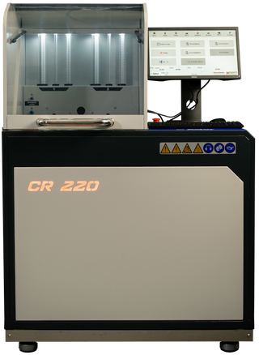

Nordiesel
A Nordiesel já está a mais de 20 anos no mercado,sempre contando com profissionais qualificados, e com equipamentos de ultima geração.

O que eu encontro na Nordiesel?
Na nossa empresa conta com um amplo espaço, fornecendo ao nosso cliente um otimo conforto, temos uma otima sala de espera, e café da manhã.
Nós aqui da Nordiesel contamos com profissionais qualificados e especializados em veiculos a Diesel.
Trabalhamos também com a reparação de chicotes elétricos.
Contamos com aparelhos de ultima geração, e aparelhos da montadora do seu veiculo. Trabalhamos também com a progamação de veiculos cummins.
Quais os equipamentos da Nordiesel?
- Axtor CR220
- Tecnomotor TM509
- FARB BTI-15

A maquina CR220 serve para testar unidades eletronicas, sensor do rail, valvula reguladora de fluxo de combustivel.

A maquina TM509 da Tecnomotor, serve para testar unidades eletrônicas

A maquina BTI15 serve para testar Bombas de alta, e bombas injetoiras
O que torna a Nordiesel uma boa oficina na cidade de Barreiras?
Além da nossa empresa ser a mais conhecida do Oeste da Bahia, contamos com mais de 20 anos de qualidade de serviço, sempre trabalhando com consciencia, e humildade, e sempre tratando nossos clientes da melhor forma possível.
A Nordiesel possui, um amplo espaço, com banheiros masculinos e femininos, com chuveiro elétrico, fazendo da empresa um lugar mais aconchegante para os nossos clientes.